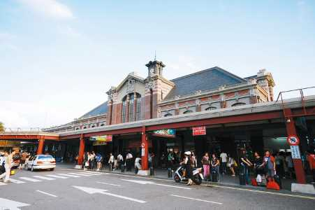

關於台中
INTRODUCE
台中市位於台灣中部，東西狹長，縣內除高山外，終年陽光普照，氣候溫和，有「台灣中部盆地」之稱。境內風景優美，風景名勝處處皆是。
私房台中
SECRET
台中自然科學博物館
秋紅谷景觀生態公園
台中氣球博物館
台中彩虹眷村

台中新社古堡花園
台中小故事
HISTORY

台中火車站
三輪車仍然是市區內的主要載客工具，之後因收費高低差別，最後計程車數量增多，淘汰了三輪車業。

內政部於1995年4月22日公告台中火車站為台閩地區第二級古蹟。

台中市區公車的盛行，以及市區公車的刷卡享用8公里或10公里免費，使大部分的民眾有較高的意願搭乘。


聯絡我們
CONTACT


※頁面上些許照片取自google，如有版權問題歡迎隨時聯絡，必定盡力配合，感謝。
© Copyright c-week.elebymax.net 2016